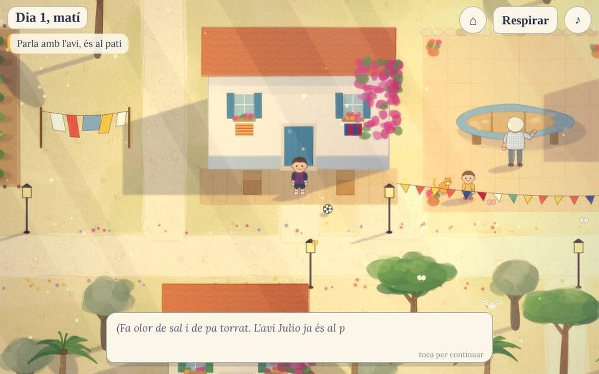
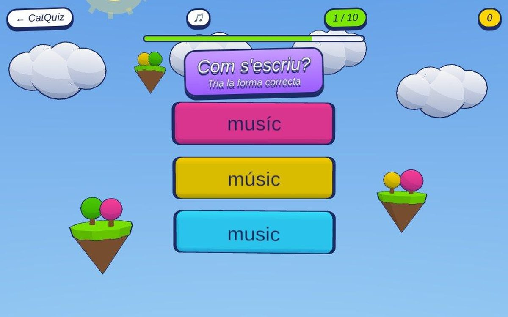
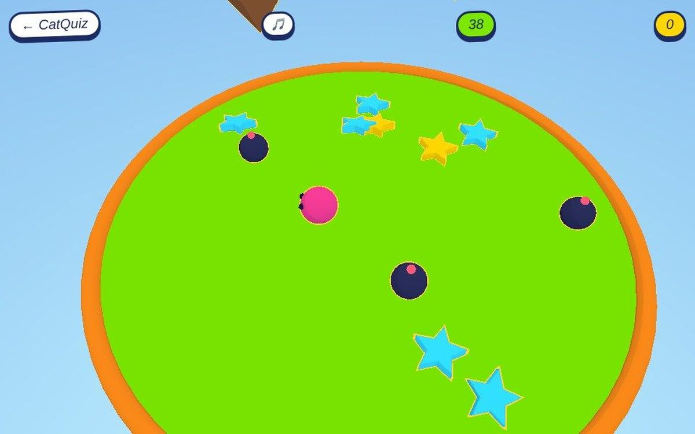
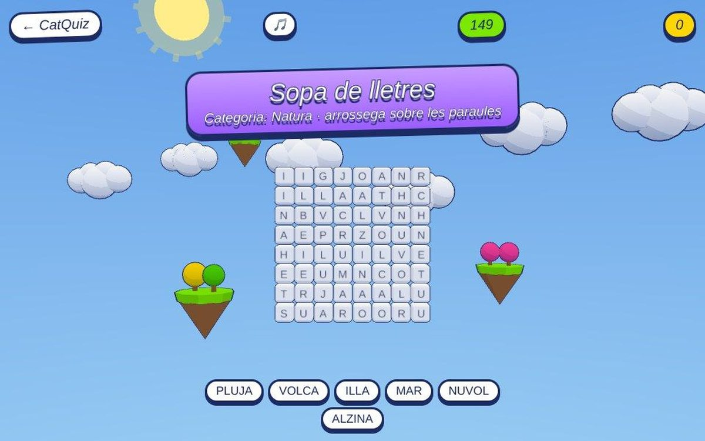
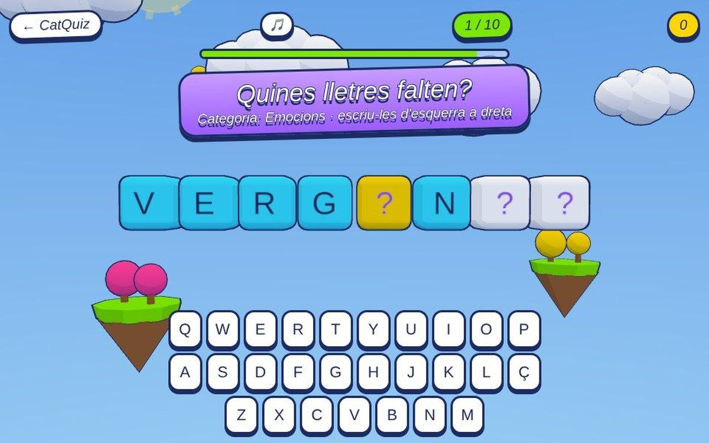

Jocs en català online i gratis
Una col·lecció de jocs en català per jugar online, al mòbil o a l'ordinador, sense instal·lar res ni registrar-se. Hi ha jocs de paraules per a tota la família: el Wordle en català (Motle), el penjat, la sopa de lletres, anagrames, un joc d'accents i un de castellanismes.
Són partides curtes, d'un o dos minuts, pensades per practicar l'ortografia i el vocabulari mentre jugues. També hi trobaràs L'últim estiu, un joc narratiu en català.

L’últim estiuJoc narratiu en català amb gràfics d'aquarel·la: un nen passa l'estiu amb el seu avi vora el mar, a Caldes d'Estrac… Com es diu en català?Joc de castellanismes en català: et diem una paraula mal dita i tries la catalana correcta entre tres. Deu rondes de…
Com es diu en català?Joc de castellanismes en català: et diem una paraula mal dita i tries la catalana correcta entre tres. Deu rondes de… L'intrúsJoc de l'intrús en català: quatre paraules, tres de la mateixa categoria i una que no hi encaixa. Troba-la abans que…
L'intrúsJoc de l'intrús en català: quatre paraules, tres de la mateixa categoria i una que no hi encaixa. Troba-la abans que… MotleEl Wordle en català: endevina la paraula de cinc lletres en sis intents. Verd, al lloc correcte; groc, hi és però en…
MotleEl Wordle en català: endevina la paraula de cinc lletres en sis intents. Verd, al lloc correcte; groc, hi és però en… Esquiva!Joc d'arcade en català: mou-te, salta els blocs baixets, recull monedes i fes servir l'escut blau per aguantar un cop…
Esquiva!Joc d'arcade en català: mou-te, salta els blocs baixets, recull monedes i fes servir l'escut blau per aguantar un cop…
Accents!Joc d'accents en català: una paraula, tres maneres d'escriure-la i només una és correcta. Tens 10 segons per ronda per… Penjat 3DEl joc del penjat en català i en 3D: tria una categoria i endevina la paraula abans que es munti el ninot. Vuit errors…
Penjat 3DEl joc del penjat en català i en 3D: tria una categoria i endevina la paraula abans que es munti el ninot. Vuit errors… AnagramaJoc d'anagrames en català: les lletres cauen barrejades i les has d'ordenar per formar la paraula. 60 segons, 5 més…
AnagramaJoc d'anagrames en català: les lletres cauen barrejades i les has d'ordenar per formar la paraula. 60 segons, 5 més…
Caça estrellesJoc d'arcade en català: mou la bola, caça estrelles daurades, encadena combos i evita les bombes. L'imant atreu les…
Sopa de lletresSopa de lletres en català online: sis paraules d'una categoria amagades en una graella de 8×8, en horitzontal…
Lletres perdudesJoc de lletres en català: a la paraula li falten lletres i les has d'escriure en ordre. Tres errors i es revela; vint…
Més col·leccions
Juegos relajantes onlineJuegos de ritmo onlineJuegos de motos, coches y karts Tots els jocs